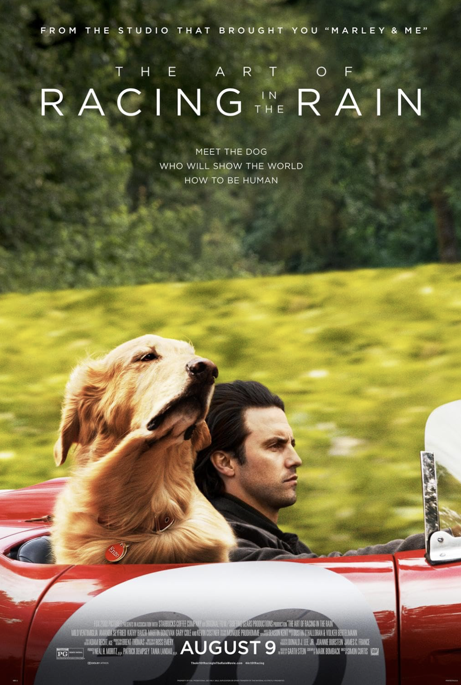

Hachi: A Dog's Tale (2009)
A True Story of Faith, Devotion and Undying Love
"Hachi: A Dog's Tale" is an emotionally stirring film that beautifully portrays the unbreakable bond between humans and their pets, leaving a lasting impact on the heart. For anyone seeking a touching and heartfelt story of loyalty and companionship, this movie is an absolute must-watch.
Source: imdb.com
The Art of Racing in the Rain (2019)
Meet the Dog Who Will Show the World How to Be Human.
"The Art of Racing in the Rain" offers a touching and insightful journey through life's highs and lows, narrated from a dog's perspective, providing a unique and heartwarming outlook on human experiences. This film beautifully captures the essence of love, resilience, and the unbreakable bond between a dog and its owner, making it a must-see for those seeking an emotional and uplifting story.
Source: imdb.com
Togo (2019)
The Untold True Story
"Togo" is an exhilarating and heartfelt film based on a true story, showcasing the incredible journey of an underestimated sled dog and his musher in a life-saving mission. This movie masterfully captures the courage, determination, and unbreakable connection between man and dog, delivering an inspiring and gripping tale for all audiences.
Source: imdb.com
A Dog's Purpose (2017)

Every Dog Happens for a Reason.
"A Dog's Purpose" is a touching and heartwarming film that follows a dog through multiple lives, showcasing the power of love, loyalty, and the deep bond between humans and their canine companions. With its emotional depth and uplifting message, this movie is a poignant reminder of the profound impact dogs have on our lives, making it a must-watch for dog lovers of all ages.
Source: imdb.com